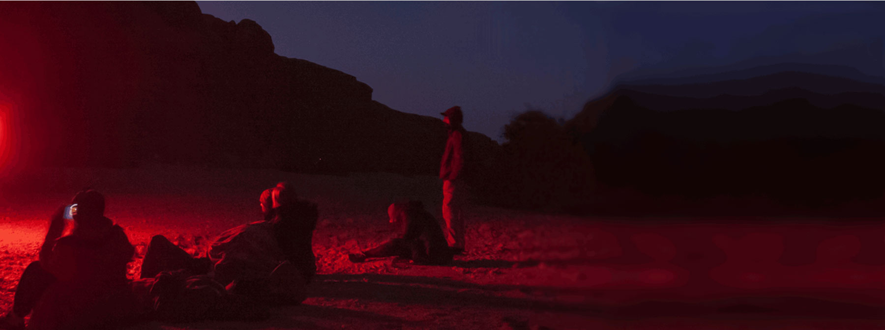
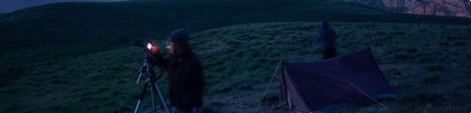
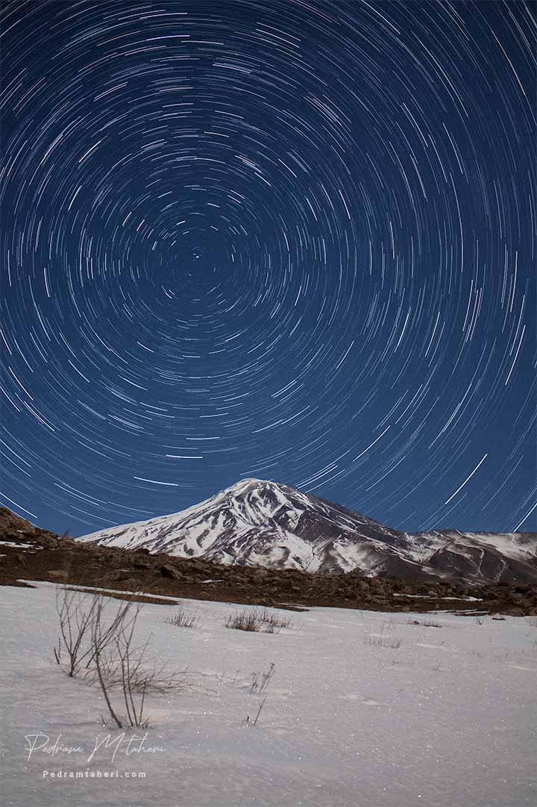

پدرام محمدطاهری

آشنایی با هنر عکاسی در شب و
شناخت مبانی اصولی عکاسی نجومی
عکاس آسمان شب و هنرمند تجسمی از سال ۱۳۸۵ تا کنون به عکاسی از آسمان شب و عناصر انسانی در شب می پردازد او در سال ۲۰۲۰ میلادی از سوی بنیاد آسمان تاریک آریزونای امریکا به عنوان فینالیست بهترین عکاس نجومی معرفی شد و طی سالهای اخیر به آموزش مبانی عکاسی آسمان شب با دوربین های ساده دی اس ال ار و پردازش تصاویر نجومی روی آورده است. عکس های او را می توانید در وب سایت شخصی مشاهده کنید.

جهت ثبت نام یا کسب آگاهی بیشتر میتوانید از طریق ایمیل با او در تماس باشید:
یا از طریق صفحات اجتماعی زیر او را دنبال کنید: